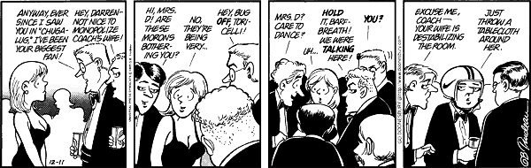

[Date Prev][Date Next][Thread Prev][Thread Next][Date Index][Thread Index]
Re: A new first for Reno/Justice! Encryption not even on the agenda!
Declan McCullagh wrote:
>
> I wrote about this yesterday, an hour after the summit ended, at:
>
> http://cgi.pathfinder.com/netly/afternoon/0,1012,1626,00.html
>
> Note Reno said that the OECD was where cryptodiscussions where happening.
>
> -Declan
firsts never mean much except that in this case, the
conference could address other issues instead of
spending the total conference arguing the fallacies
of encryption policies, or as you aptly stated:
But she clearly intends to do
more than collaborate: The
joint principles call for the
government "to continue
providing the public and private
sectors with standards for
reliable and secure
telecommunications and data
processing technologies." Like
the Clipper Chip, maybe? --By
Declan McCullagh/Washington
or as I put in an earlier rant:
is it not odd that the more the government tries to
abridge our free speech rights, the more they want to
confiscate our weapons?
encryption is a [modern*] weapon against government intrusion
and tyranny.
* modern in the sense of availability easily to the masses.
BTW: today's Doonesbury is timeless. Coach (nee Captain) has
not lost it... attached for a limited use to a limited
(no pun intended) audience under fair use -thanjs Gary.
attila out... one more time for justice in our lifetime

{kind=link}